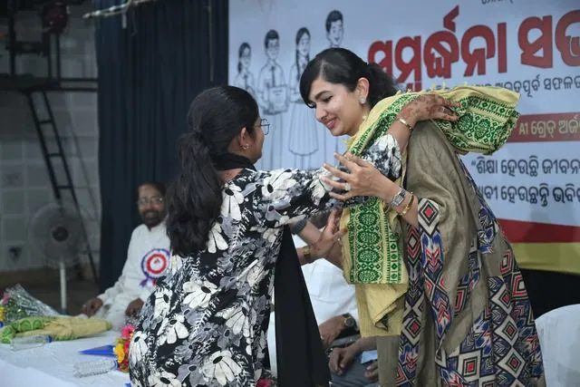
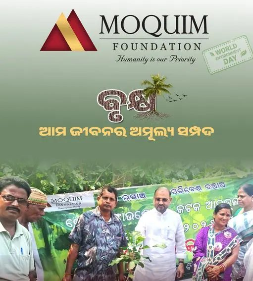
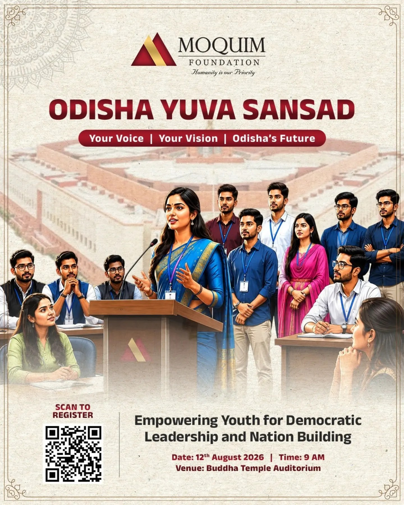
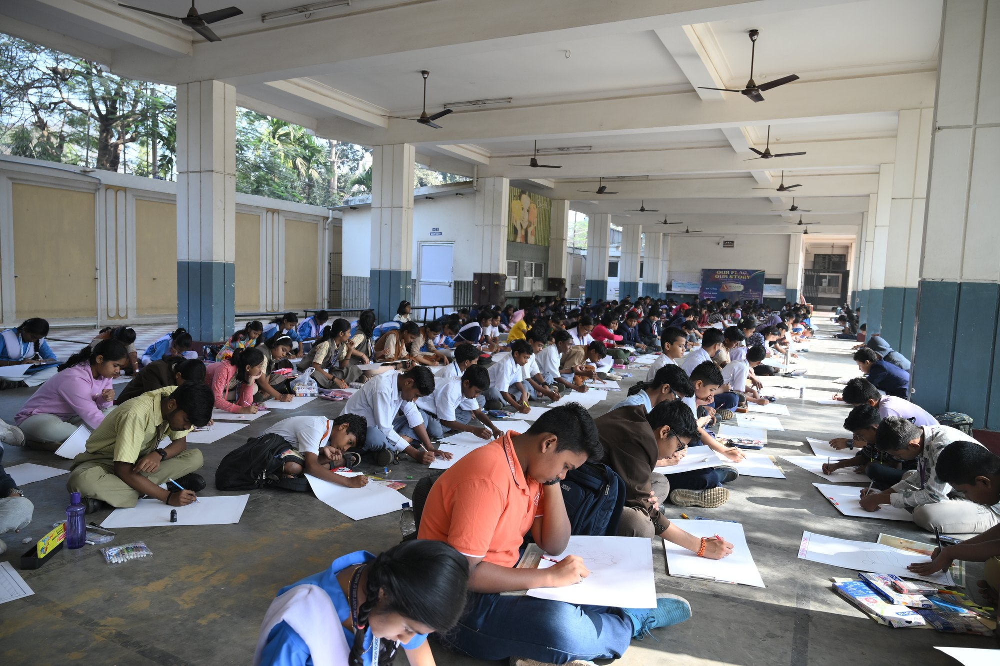
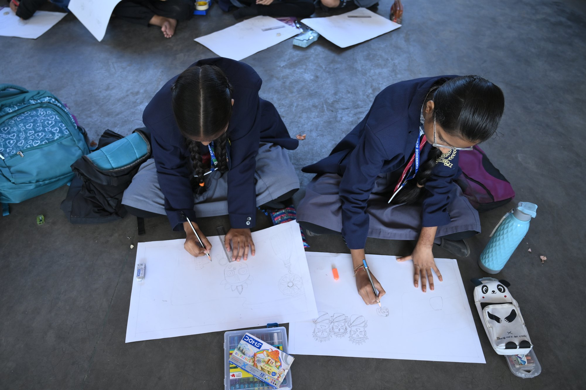
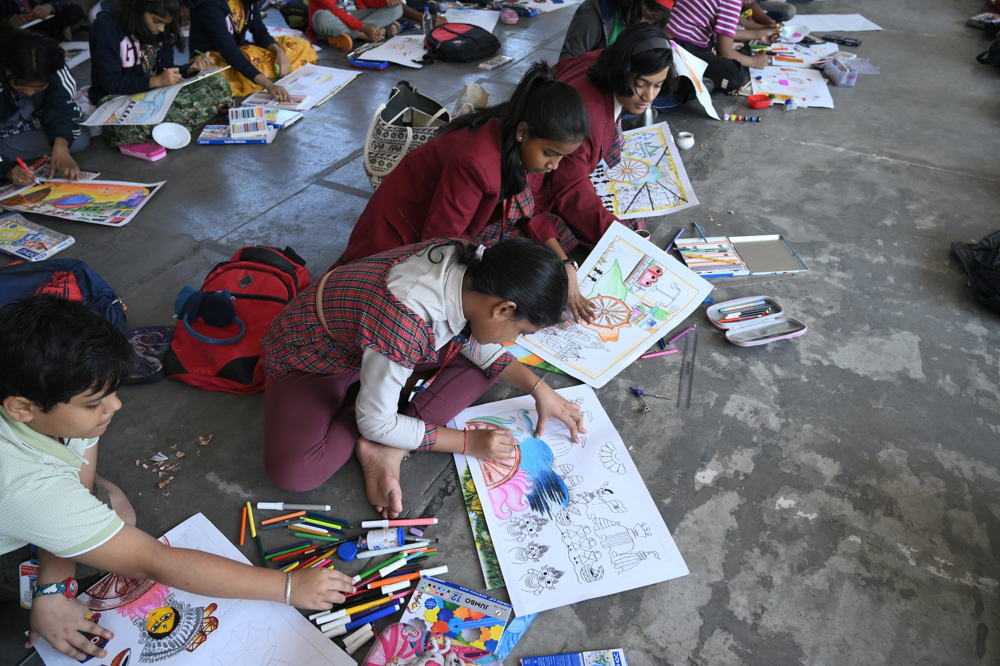
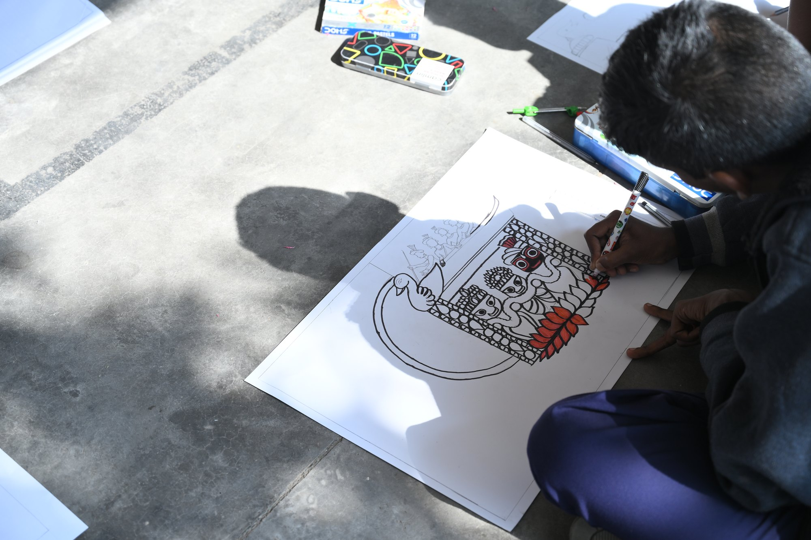
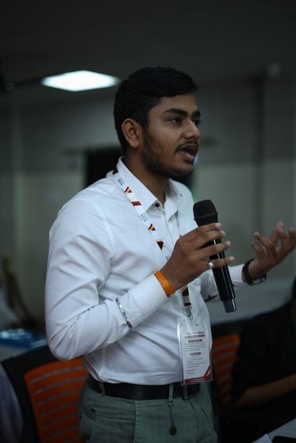
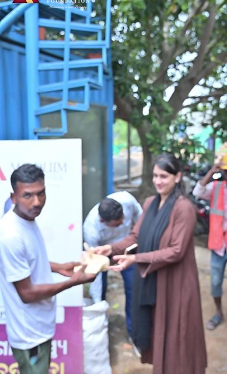

NGO in Odisha empowering communities, transforming lives.
Moquim Foundation is a social welfare organisation and NGO in Cuttack working for women empowerment, rural development, community welfare, healthcare support, education, food distribution, sanitation awareness and environmental conservation, to create healthier, stronger and more sustainable communities.
Moquim Foundation: an NGO in Odisha creating meaningful change
Founded by Mohd. Moquim, the Foundation grew from a rooted belief in service, compassion and human dignity. He was inspired by his father, Dr. Mohammed Nayeem, whose life was given to serving the underprivileged, and he turned that spirit into an organisation that stands with communities in need. The work began in 2018 and the trust was registered in January 2020.
What started as a vision to make a difference has grown into a movement focused on creating opportunities, restoring dignity and building stronger communities.
Today the Moquim Foundation is a social welfare organisation, a non-profit organization and an NGO in Cuttack working across women empowerment, rural development programs, healthcare support, education, food distribution and sanitation awareness. As a charity organisation its work extends to environmental conservation and sustainable rural development, bringing communities together to meet social and environmental challenges. Through community welfare initiatives it continues to turn compassion into action across Odisha.
Explore Our StoryDriving community welfare through sustainable action
As a social welfare organisation and non-profit in Odisha, we work across the areas that shape healthier, stronger and more empowered communities. From women empowerment and rural development to healthcare, education, food distribution, sanitation awareness and environmental conservation, our initiatives meet essential needs while creating pathways for lasting change.

Healthcare
Providing accessible healthcare support, community healthcare and health awareness initiatives for vulnerable and underserved communities.
Explore
Food, Relief & Sanitation
Our rural development programs and community welfare initiatives address essential needs through food distribution, sanitation awareness, social support and sustainable community development.
Explore
Women's Empowerment
Our women empowerment programs focus on skill development, women welfare, education and opportunities that foster self-reliance and economic independence.
Explore
Environment
Driving environmental awareness programs through tree plantation, environmental conservation, green initiatives and sustainable development practices.
Explore
Education & Youth
Creating access to education support, child education and learning opportunities that help children and youth build confident, empowered futures.
Explore
Sports & Wellness
Cricket, yoga and public wellness, bringing the district onto the field together.
ExploreYour voice, your vision, Odisha's future.
The Yuva Sansad is a youth parliament. Delegates get a seat, a nameplate and a microphone, and they are asked to argue the questions a state actually has to answer, in front of an audience that is listening.
The format is deliberately formal, because the point is the practice. Most delegates have never spoken into a microphone in a hall full of strangers. By the end of the day most of them have done it twice.

Six hundred children, one morning, one story.
A school corridor in Cuttack, classes five to ten, their own colours and brushes, and a subject they all know by heart.
See the competition



Cambridge School, Barabati Stadium, 6 February 2026
Bearing the torch of his father.
Dr. Mohammed Nayeem practised medicine in Cuttack and gave much of it away. He treated those who could not pay, and he taught his son that a life is measured by what it returns to the society around it.
I invite you to become a member of Moquim Foundation and be part of a collective effort towards creating a stronger and more inclusive society. As a member, you will have access to the Foundation’s support and initiatives, while also having the opportunity to recommend individuals or families who may be in need of assistance. Together, we can contribute meaningfully to the well-being of our community and help create lasting social impact.Mohammed Moquim, Founder
Three months, every day, in 2020
When the lockdown came, the Foundation went out every day for three months. Volunteers packed dry ration sacks in the office and carried them into slums and lanes across Cuttack. The photographs from that period are the plainest record of what this Foundation is for.
Six years, one district
Recent activities

Education & Youth 12 August 2026
Odisha Yuva Sansad
A youth parliament that hands young people the microphone and asks them to argue the state's future.
Buddha Park, Bhubaneswar19 photographs

Healthcare 13 July 2026
Dr Nayeem Health Camp
A free health camp held in memory of Dr Nayeem, offering consultation and screening to the community.
Cuttack, Odisha11 photographs

Sports & Wellness 21 June 2026
International Yoga Day 2026
The Foundation laid mats across an entire ground and filled them, one of the district's largest public wellness gatherings.
Cuttack, Odisha30 photographs

Environment 5 June 2026
World Environment Day Plantation
Residents and volunteers planting and watering saplings together on World Environment Day.
Satyanagar Road, Cuttack20 photographs

Education & Youth 2026
Sambardhana Utchab
Felicitating the top ten and every A1-grade student in the Cuttack district Matriculation examinations.
Cuttack, Odisha52 photographs

Education & Youth 6 February 2026
Our Flag, Our Story, Art Competition
Celebrating Odisha culture through art, open to classes five to ten, with ₹10,000 in prizes.
Cambridge School, Barabati Stadium, Cuttack19 photographs
See the work
Filmed at our camps, drives and gatherings, with the original sound. Tap any film to play.
From the ground


Frequently asked
What areas does Moquim Foundation focus on?
We work across women empowerment, rural development, healthcare, education, food distribution, sanitation and environmental conservation, alongside sports and public wellness.
How does the Foundation support education?
Our education support helps children and young people reach learning opportunities and build essential skills. It includes the annual Sambardhana Utchab felicitation of the district’s Matriculation students, school art competitions and the Odisha Yuva Sansad youth parliament.
How does the Foundation empower women?
We support skill development, education and self-reliance, helping women build greater independence and opportunity. Health awareness programmes, including PCOS awareness for students, sit alongside this work.
What makes the Foundation’s work different?
People, dignity and practical action sit at the centre of every initiative. We work in one district and we publish what we do, with dates, venues and photographs, so anyone can check it.
Where does the Foundation work?
The registered office is at Purighat, Ring Road, Cuttack 753002. Almost all of our documented work has taken place in Cuttack district, with the Odisha Yuva Sansad held at Buddha Park in Bhubaneswar.
Are donations eligible for tax exemption?
The Foundation holds registration under section 12AB of the Income Tax Act, granted on 17 January 2026. Approval under section 80G has not yet been granted, so donations do not currently carry a deduction. We will say so here the moment that changes.
How can I get in touch?
Call +91 99370 81575, email moquimfoundation.org@gmail.com, or come to the office at Purighat, Ring Road, Cuttack.
Every action can create meaningful change
Change grows when people come together. Whether you volunteer your time, join a community service programme, support a local initiative or help spread awareness, your involvement helps us reach more underserved communities.
Volunteer With Us
Join our community service programs and social work opportunities, contributing your time, skills and energy to initiatives supporting communities across Odisha.
Join usSupport a Cause
Make a charity donation and stand behind work in women empowerment, rural development, healthcare, education, food distribution and the environment.
Give nowStart a Community Initiative
Bring people together around a cause and help create change through community welfare and sustainable development.
Talk to usSpread Awareness
Use your voice for health awareness, environmental conservation, education and social development.
See the workTo help the poor, the hungry, the homeless, the hurt, the broken.
Show up and contribute to life. Every contribution goes directly into the camps, the rations and the programmes described on this site.
“I request you to become a member of Moquim Foundation. Together, we can work for the betterment of our society.”
Mohammed Moquim, Founder